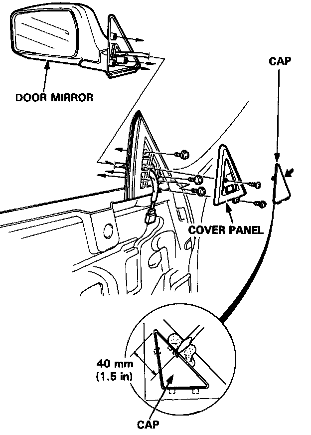
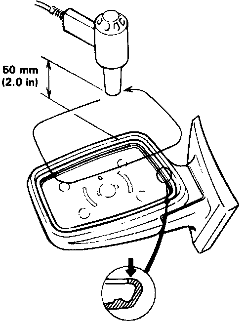
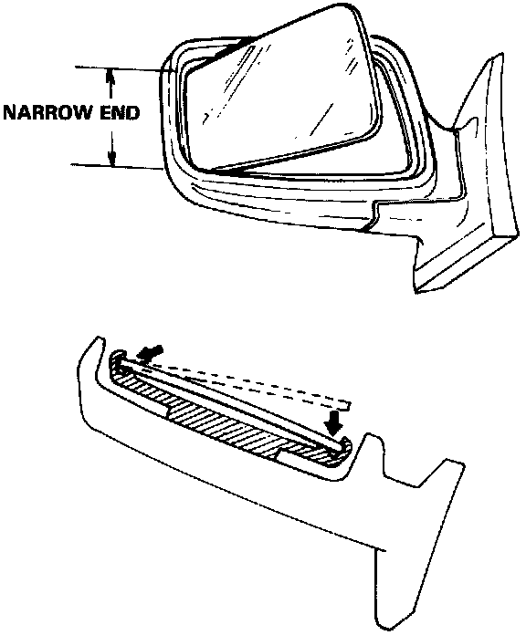

Mirrors: Service and Repair
Power Door Mirror Removal
1. Remove the door panel and disconnect the power mirror wires.
2. Pry out the cap with a flat tip screwdriver and remove the screws, then remove the cover panel.
3. Remove the mirror mounting screws while holding the mirror.
4. Install the door mirror in the reverse order of removal.
5. With the door and door glass closed fully, check for water and air leaks.
NOTE: Do not use high pressure water.
Mirror Glass Replacement

1. Heat the edge of the glass with a low powered heat gun for several minutes, then remove the glass.

2. Install the glass in the mirror case, narrow end first.